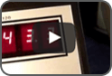

Excellent sound insulation
The multi-chambered profile design, double gasket seals and multipoint locking systems of the windows and doors can reduce sound transmission up to 40 decibels (STC 40), giving a literal meaning to the phrase “seen but not heard”.
High security
High-stability windows and doors offer the best solution for increased safety and security. Special fittings and glazings, coupled with elaborate locksets have ensured all attempted break-ins (5 so far) have failed.
Weather resistance and low maintenance
The excellent material properties of Deceuninck systems outlast almost every other building material in your home, meaning that they do not alter under extreme temperature or weathering. They do not warp, rot, corrode or discolour even in tropical and salty coastal climates. Tests have shown windows installed 40 years ago still look like new.
Efficient thermal insulation
The local climate can be too hot to handle. But with a very low thermal coefficient (up to U value of 1.6 W/m2 K), our systems are able to keep the warm air out and the cool air conditioned air in. This means you get lower electricity bills due to energy savings!
Maximum water tightness and wind resistance
The multi-chambered profile design, double gasket seals and multipoint locking systems of the windows and doors can reduce sound transmission up to 40 decibels (STC 40), giving a literal meaning to the phrase “seen but not heard”.
Behaviour in case of fire
Rigid fire tests have shown that our materials, being naturally flame retardant and self-extinguishing throughout their product life, will not cause or enhance the development of an accidental fire.
Material & structural performance
With conclusive tests conducted over the past 40 years, the longevity and superior quality of the Deceuninck material compound performs to European standards for strength, durability, heat stability, colour retention and termite resistance.

Real World Sound Insulation / Soundproofing
Test by Sapphire Windows